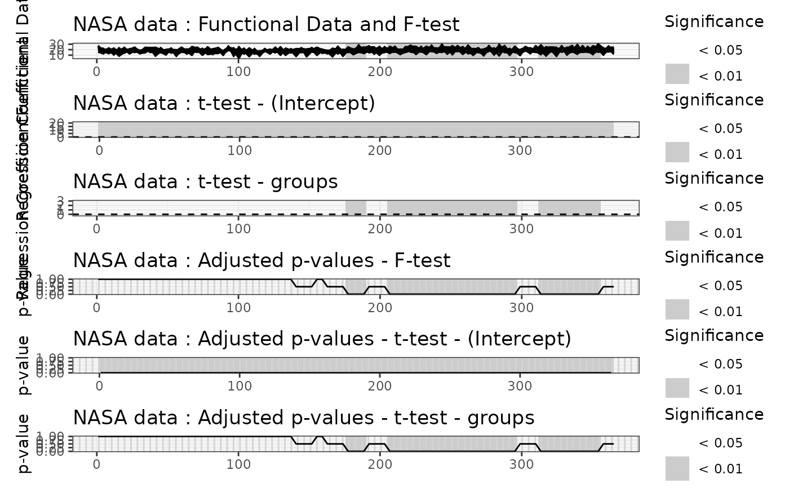

Interval-wise testing procedure for testing functional-on-scalar linear models
Source:R/lm-iwt.R
IWTlm.RdThe function is used to fit and test functional linear models. It can be used to carry out regression, and analysis of variance. It implements the interval-wise testing procedure (IWT) for testing the significance of the effects of scalar covariates on a functional population.
Usage
IWTlm(
formula,
dx = NULL,
B = 1000L,
method = c("residuals", "responses"),
recycle = TRUE
)Arguments
- formula
An object of class
stats::formula(or one that can be coerced to that class) specifying the model to be fitted in a symbolic fashion. The output variable (left-hand side) of the formula can be either a matrix of dimension \(n \times J\) containing the pointwise evaluations of \(n\) functions on the same grid of \(J\) points, or an object of classfda::fd.- dx
A numeric value specifying the discretization step of the grid used to evaluate functional data when it is provided as objects of class
fda::fd. Defaults toNULL, in which case a default value of0.01is used which corresponds to a grid of size100L. Unused if functional data is provided in the form of matrices.- B
An integer value specifying the number of iterations of the MC algorithm to evaluate the p-value of the permutation tests. Defaults to
1000L.- method
A string specifying the method used to calculate the p-value of permutation tests. Choices are either
"residuals"which performs permutation of residuals under the reduced model according to the Freedman and Lane scheme or"responses", which performs permutation of the responses, according to the Manly scheme. Defaults to"residuals".- recycle
A boolean value specifying whether the recycled version of the interval-wise testing procedure should be used. See Pini and Vantini (2017) for details. Defaults to
TRUE.
Value
An object of class flm containing the following components:
call: The matched call.design_matrix: The design matrix of the functional-on-scalar linear model.unadjusted_pval_F: Evaluation on a grid of the unadjusted p-value function of the functional F-test.adjusted_pval_F: Evaluation on a grid of the adjusted p-value function of the functional F-test.unadjusted_pval_part: Evaluation on a grid of the unadjusted p-value function of the functional F-tests on each factor of the analysis of variance (rows).adjusted_pval_part: Adjusted p-values of the functional F-tests on each factor of the analysis of variance (rows) and each basis coefficient (columns).data_eval: Evaluation on a fine uniform grid of the functional data obtained through the basis expansion.coeff_regr_eval: Evaluation on a fine uniform grid of the functional regression coefficients.fitted_eval: Evaluation on a fine uniform grid of the fitted values of the functional regression.residuals_eval: Evaluation on a fine uniform grid of the residuals of the functional regression.R2_eval: Evaluation on a fine uniform grid of the functional R-squared of the regression.
Optionally, the list may contain the following components:
pval_matrix_F: Matrix of dimensionsc(p,p)of the p-values of the intervalwise F-tests. The element \((i,j)\) of matrixpval_matrixcontains the p-value of the test of interval indexed by \((j,j+1,...,j+(p-i))\); this component is present only ifcorrectionis set to"IWT".pval_matrix_part: Array of dimensionsc(L+1,p,p)of the p-values of the multivariate F-tests on factors. The element \((l,i,j)\) of arraypval_matrix_partcontains the p-value of the joint NPC test on factorlof the components \((j,j+1,...,j+(p-i))\); this component is present only ifcorrectionis set to"IWT".Global_pval_F: Global p-value of the overall test F; this component is present only ifcorrectionis set to"Global".Global_pval_part: Global p-value of test F involving each factor separately; this component is present only ifcorrectionis set to"Global".
References
A. Pini and S. Vantini (2017). The Interval Testing Procedure: Inference for Functional Data Controlling the Family Wise Error Rate on Intervals. Biometrics 73(3): 835–845.
Pini, A., Vantini, S., Colosimo, B. M., & Grasso, M. (2018). Domain‐selective functional analysis of variance for supervised statistical profile monitoring of signal data. Journal of the Royal Statistical Society: Series C (Applied Statistics) 67(1), 55-81.
Abramowicz, K., Hager, C. K., Pini, A., Schelin, L., Sjostedt de Luna, S., & Vantini, S. (2018). Nonparametric inference for functional‐on‐scalar linear models applied to knee kinematic hop data after injury of the anterior cruciate ligament. Scandinavian Journal of Statistics 45(4), 1036-1061.
D. Freedman and D. Lane (1983). A Nonstochastic Interpretation of Reported Significance Levels. Journal of Business & Economic Statistics 1(4), 292-298.
B. F. J. Manly (2006). Randomization, Bootstrap and Monte Carlo Methods in Biology. Vol. 70. CRC Press.
See also
See also plot.flm() for plotting the results and
summary.flm() for summarizing the results of the functional analysis
of variance.
Examples
# Defining the covariates
temperature <- rbind(NASAtemp$milan[, 1:100], NASAtemp$paris[, 1:100])
groups <- c(rep(0, 22), rep(1, 22))
# Performing the IWT
IWT_result <- IWTlm(temperature ~ groups, B = 2L)
#>
#> ── Point-wise tests ────────────────────────────────────────────────────────────
#>
#> ── Interval-wise tests ─────────────────────────────────────────────────────────
#>
#> ── Creating the p-value matrix: end of row 2 out of 100 ────────────────────────
#>
#> ── Creating the p-value matrix: end of row 3 out of 100 ────────────────────────
#>
#> ── Creating the p-value matrix: end of row 4 out of 100 ────────────────────────
#>
#> ── Creating the p-value matrix: end of row 5 out of 100 ────────────────────────
#>
#> ── Creating the p-value matrix: end of row 6 out of 100 ────────────────────────
#>
#> ── Creating the p-value matrix: end of row 7 out of 100 ────────────────────────
#>
#> ── Creating the p-value matrix: end of row 8 out of 100 ────────────────────────
#>
#> ── Creating the p-value matrix: end of row 9 out of 100 ────────────────────────
#>
#> ── Creating the p-value matrix: end of row 10 out of 100 ───────────────────────
#>
#> ── Creating the p-value matrix: end of row 11 out of 100 ───────────────────────
#>
#> ── Creating the p-value matrix: end of row 12 out of 100 ───────────────────────
#>
#> ── Creating the p-value matrix: end of row 13 out of 100 ───────────────────────
#>
#> ── Creating the p-value matrix: end of row 14 out of 100 ───────────────────────
#>
#> ── Creating the p-value matrix: end of row 15 out of 100 ───────────────────────
#>
#> ── Creating the p-value matrix: end of row 16 out of 100 ───────────────────────
#>
#> ── Creating the p-value matrix: end of row 17 out of 100 ───────────────────────
#>
#> ── Creating the p-value matrix: end of row 18 out of 100 ───────────────────────
#>
#> ── Creating the p-value matrix: end of row 19 out of 100 ───────────────────────
#>
#> ── Creating the p-value matrix: end of row 20 out of 100 ───────────────────────
#>
#> ── Creating the p-value matrix: end of row 21 out of 100 ───────────────────────
#>
#> ── Creating the p-value matrix: end of row 22 out of 100 ───────────────────────
#>
#> ── Creating the p-value matrix: end of row 23 out of 100 ───────────────────────
#>
#> ── Creating the p-value matrix: end of row 24 out of 100 ───────────────────────
#>
#> ── Creating the p-value matrix: end of row 25 out of 100 ───────────────────────
#>
#> ── Creating the p-value matrix: end of row 26 out of 100 ───────────────────────
#>
#> ── Creating the p-value matrix: end of row 27 out of 100 ───────────────────────
#>
#> ── Creating the p-value matrix: end of row 28 out of 100 ───────────────────────
#>
#> ── Creating the p-value matrix: end of row 29 out of 100 ───────────────────────
#>
#> ── Creating the p-value matrix: end of row 30 out of 100 ───────────────────────
#>
#> ── Creating the p-value matrix: end of row 31 out of 100 ───────────────────────
#>
#> ── Creating the p-value matrix: end of row 32 out of 100 ───────────────────────
#>
#> ── Creating the p-value matrix: end of row 33 out of 100 ───────────────────────
#>
#> ── Creating the p-value matrix: end of row 34 out of 100 ───────────────────────
#>
#> ── Creating the p-value matrix: end of row 35 out of 100 ───────────────────────
#>
#> ── Creating the p-value matrix: end of row 36 out of 100 ───────────────────────
#>
#> ── Creating the p-value matrix: end of row 37 out of 100 ───────────────────────
#>
#> ── Creating the p-value matrix: end of row 38 out of 100 ───────────────────────
#>
#> ── Creating the p-value matrix: end of row 39 out of 100 ───────────────────────
#>
#> ── Creating the p-value matrix: end of row 40 out of 100 ───────────────────────
#>
#> ── Creating the p-value matrix: end of row 41 out of 100 ───────────────────────
#>
#> ── Creating the p-value matrix: end of row 42 out of 100 ───────────────────────
#>
#> ── Creating the p-value matrix: end of row 43 out of 100 ───────────────────────
#>
#> ── Creating the p-value matrix: end of row 44 out of 100 ───────────────────────
#>
#> ── Creating the p-value matrix: end of row 45 out of 100 ───────────────────────
#>
#> ── Creating the p-value matrix: end of row 46 out of 100 ───────────────────────
#>
#> ── Creating the p-value matrix: end of row 47 out of 100 ───────────────────────
#>
#> ── Creating the p-value matrix: end of row 48 out of 100 ───────────────────────
#>
#> ── Creating the p-value matrix: end of row 49 out of 100 ───────────────────────
#>
#> ── Creating the p-value matrix: end of row 50 out of 100 ───────────────────────
#>
#> ── Creating the p-value matrix: end of row 51 out of 100 ───────────────────────
#>
#> ── Creating the p-value matrix: end of row 52 out of 100 ───────────────────────
#>
#> ── Creating the p-value matrix: end of row 53 out of 100 ───────────────────────
#>
#> ── Creating the p-value matrix: end of row 54 out of 100 ───────────────────────
#>
#> ── Creating the p-value matrix: end of row 55 out of 100 ───────────────────────
#>
#> ── Creating the p-value matrix: end of row 56 out of 100 ───────────────────────
#>
#> ── Creating the p-value matrix: end of row 57 out of 100 ───────────────────────
#>
#> ── Creating the p-value matrix: end of row 58 out of 100 ───────────────────────
#>
#> ── Creating the p-value matrix: end of row 59 out of 100 ───────────────────────
#>
#> ── Creating the p-value matrix: end of row 60 out of 100 ───────────────────────
#>
#> ── Creating the p-value matrix: end of row 61 out of 100 ───────────────────────
#>
#> ── Creating the p-value matrix: end of row 62 out of 100 ───────────────────────
#>
#> ── Creating the p-value matrix: end of row 63 out of 100 ───────────────────────
#>
#> ── Creating the p-value matrix: end of row 64 out of 100 ───────────────────────
#>
#> ── Creating the p-value matrix: end of row 65 out of 100 ───────────────────────
#>
#> ── Creating the p-value matrix: end of row 66 out of 100 ───────────────────────
#>
#> ── Creating the p-value matrix: end of row 67 out of 100 ───────────────────────
#>
#> ── Creating the p-value matrix: end of row 68 out of 100 ───────────────────────
#>
#> ── Creating the p-value matrix: end of row 69 out of 100 ───────────────────────
#>
#> ── Creating the p-value matrix: end of row 70 out of 100 ───────────────────────
#>
#> ── Creating the p-value matrix: end of row 71 out of 100 ───────────────────────
#>
#> ── Creating the p-value matrix: end of row 72 out of 100 ───────────────────────
#>
#> ── Creating the p-value matrix: end of row 73 out of 100 ───────────────────────
#>
#> ── Creating the p-value matrix: end of row 74 out of 100 ───────────────────────
#>
#> ── Creating the p-value matrix: end of row 75 out of 100 ───────────────────────
#>
#> ── Creating the p-value matrix: end of row 76 out of 100 ───────────────────────
#>
#> ── Creating the p-value matrix: end of row 77 out of 100 ───────────────────────
#>
#> ── Creating the p-value matrix: end of row 78 out of 100 ───────────────────────
#>
#> ── Creating the p-value matrix: end of row 79 out of 100 ───────────────────────
#>
#> ── Creating the p-value matrix: end of row 80 out of 100 ───────────────────────
#>
#> ── Creating the p-value matrix: end of row 81 out of 100 ───────────────────────
#>
#> ── Creating the p-value matrix: end of row 82 out of 100 ───────────────────────
#>
#> ── Creating the p-value matrix: end of row 83 out of 100 ───────────────────────
#>
#> ── Creating the p-value matrix: end of row 84 out of 100 ───────────────────────
#>
#> ── Creating the p-value matrix: end of row 85 out of 100 ───────────────────────
#>
#> ── Creating the p-value matrix: end of row 86 out of 100 ───────────────────────
#>
#> ── Creating the p-value matrix: end of row 87 out of 100 ───────────────────────
#>
#> ── Creating the p-value matrix: end of row 88 out of 100 ───────────────────────
#>
#> ── Creating the p-value matrix: end of row 89 out of 100 ───────────────────────
#>
#> ── Creating the p-value matrix: end of row 90 out of 100 ───────────────────────
#>
#> ── Creating the p-value matrix: end of row 91 out of 100 ───────────────────────
#>
#> ── Creating the p-value matrix: end of row 92 out of 100 ───────────────────────
#>
#> ── Creating the p-value matrix: end of row 93 out of 100 ───────────────────────
#>
#> ── Creating the p-value matrix: end of row 94 out of 100 ───────────────────────
#>
#> ── Creating the p-value matrix: end of row 95 out of 100 ───────────────────────
#>
#> ── Creating the p-value matrix: end of row 96 out of 100 ───────────────────────
#>
#> ── Creating the p-value matrix: end of row 97 out of 100 ───────────────────────
#>
#> ── Creating the p-value matrix: end of row 98 out of 100 ───────────────────────
#>
#> ── Creating the p-value matrix: end of row 99 out of 100 ───────────────────────
#>
#> ── Creating the p-value matrix: end of row 100 out of 100 ──────────────────────
#>
#> ── Interval-Wise Testing completed ─────────────────────────────────────────────
# Summary of the IWT results
summary(IWT_result)
#> $call
#> IWTlm(formula = temperature ~ groups, B = 2L)
#>
#> $ttest
#> Minimum p-value
#> (Intercept) 0 ***
#> groups 0 ***
#>
#> $R2
#> Range of functional R-squared
#> Min R-squared 0.0003189364
#> Max R-squared 0.2476892354
#>
#> $ftest
#> Minimum p-value
#> 1 0 ***
#>
# Plot of the IWT results
plot(
IWT_result,
main = 'NASA data',
plot_adjpval = TRUE,
xlab = 'Day',
xrange = c(1, 365)
)
#> Warning: Removed 100 rows containing missing values or values outside the scale range
#> (`geom_line()`).
#> Warning: Removed 100 rows containing missing values or values outside the scale range
#> (`geom_line()`).
